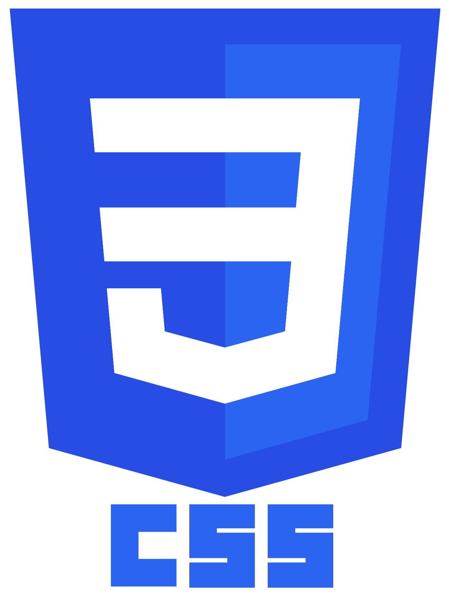
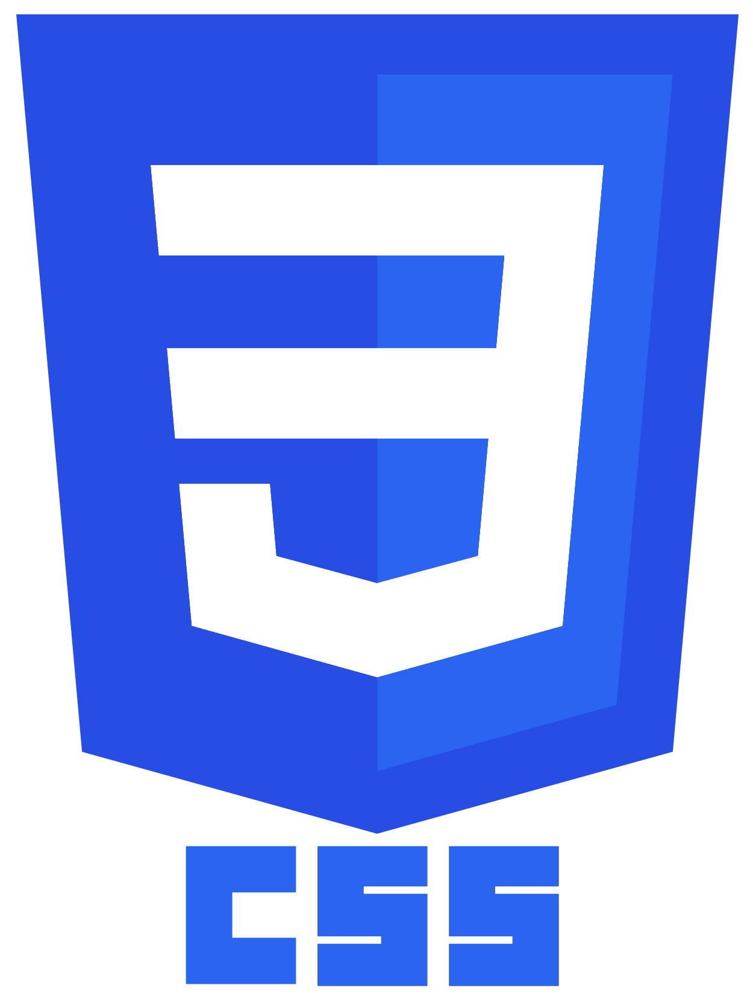

Blandas
- Soporte.
- Trabajo bajo presión.
- Trabajo en equipo.
- Proactividad.
- Comunicación.
- Inglés Intermedio.
Analista de Sistemas con experiencia en las áreas de soporte aplicaciones, creación de reportes en herramientas como Power BI, Excel, y en la creación de procesos de Extracción Transformación y Carga de Datos (ETL), manejo de Bases de Datos Relacionales y Programacion Web,soy una persona proactiva, con ganas de obtener crecimiento personal, profesional y aprendizaje de nuevas tecnologías.

Proveniente de la Ciudad de Santa Cruz de la Sierra - Bolivia, me considero un profesional proactivo con muchas ganas de aprender y tener crecimiento profesional y personal. Tengo amplias habilidades de comunicación y trabajo en equipo, así como también poseo una capacidad de aprendizaje veloz.

 



Perteneciente a la Comunidad Microsoft de la Universidad UTEPSA UCOM, donde realicé charlas sobre tecnologías de Cloud Computing (Microsoft Azure). También tome parte en el Proyecto de Integración de Minería de Datos para aumentar la productividad de la Empresa Turística "Turismo Balas".